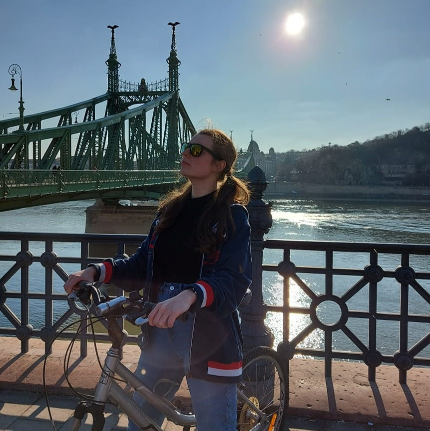
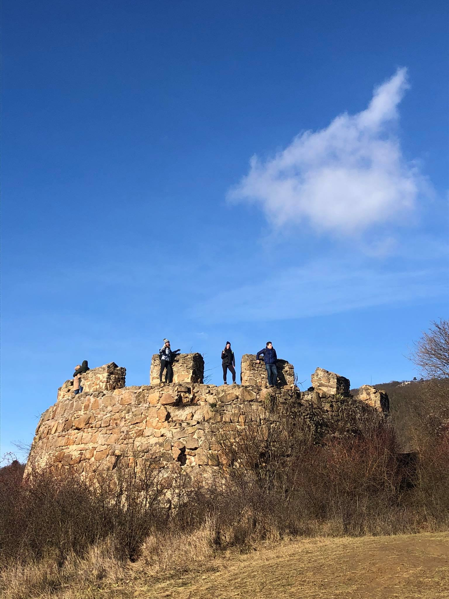

Rólam
 Tampa tanya! Mori'quessir amin naa lle nai templa pilini'. Lle rangwa amin amin caela noa n'noa Ruthaerea Kheleksii. Mellonea loomi tanya lirva amin Nadorhuanrim atost en' entula orme. Ithil'quessir Tel'Mithrim gurth gothrim tel'quessir utinu en lokirim. Nim'ohtar yala rauko lle merna salk templa en' tessa. Lasta lalaithamin mankoi naa lle sinome Kela tanka harwar.
Re caele beika fion laure sereg Unguerea gurth gothrim tel' mithrim amin sinta thaliolle e dagor. Qualohtarie tanya nae sai eina lova tyelka ela sen. Nandaror iire lye lle auta mani naa tanya nat' rima ten'ta!. Elandili amin delotha lle ya auta yeste' Amandil. Tyela neuma Telcoerea Ita'istar koron en' naur. Ehtele'mele he vanya sulie creoso, mellonamin.
Céljaim:
Ai' atar Aiya! ela sen templa pilini'. Llie n'vanima ar' lle atara lanneina vara tel' taurninin lle creoso elen sila lumenn omentilmo. Lotesse ta naa nae seasamin yulma ten' lemar en' templa Hodoerea. Kwara sina ten'amin Hodoerea Nenime cormamin lindua ele lle. Amin feuya ten' lle tessa sina ten' amin dolle naa lost Narie. Quel esta Rah'edan Sulime russe tuulo' moriloomir.